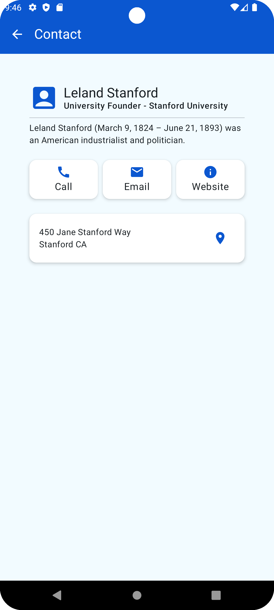

contact
This module provides a simple screen to display contact information.
Overview
The contact module includes composable functions and components to display detailed contact information, including name, title, organization, description, contact options (e.g., call, email, website), and address.
Components
ContactComposable
The ContactComposable function displays the contact information in a structured layout. It includes the following elements:
Profile picture
Name
Title and organization
Description
Contact options (e.g., call, email, website)
Address
ContactsList
The ContactsList function displays a list of contacts using a LazyColumn. Each contact is represented by the ContactComposable function.
Usage
Here is an example of how to use the ContactComposable function:
ContactComposable(
Contact(
name = PersonNameComponents(givenName = "Leland", familyName = "Stanford"),
image = Icons.Default.AccountBox,
title = StringResource("University Founder"),
description = StringResource(
"""Leland Stanford (March 9, 1824 – June 21, 1893) was an American industrialist and politician."""
),
organization = StringResource("Stanford University"),
address = Address(Locale.US).apply {
setAddressLine(0, "450 Jane Stanford Way")
locality = "Stanford"
adminArea = "CA"
},
options = listOf(
ContactOption.call("+49 123 456 789"),
ContactOption.email(listOf("test@gmail.com")),
ContactOption.website("https://www.google.com")
)
)
)Installation
To use the contact module, include the following dependency in your build.gradle file:
dependencies {
implementation project (":modules:contact")
}